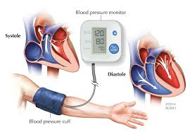

Artículo 1: Sarampión
El sarampión es una enfermedad viral muy contagiosa que afecta sobre todo a los niños y puede causar severos problemas de salud, incluyendo diarrea intensa, infecciones de oído, ceguera, neumonía y encefalitis.
La Enciclopedia Ilustrada de Salud incluye más de 4,000 artículos acerca de enfermedades, exámenes, síntomas, lesiones y procedimientos quirúrgicos. Aquí encontrará información detallada sobre una variedad de temas médicos.
El sarampión es una enfermedad viral muy contagiosa que afecta sobre todo a los niños y puede causar severos problemas de salud, incluyendo diarrea intensa, infecciones de oído, ceguera, neumonía y encefalitis.
La hipertensión es una afección en la cual la fuerza de la sangre contra las paredes de las arterias es demasiado alta.
Si tiene alguna consulta contacta con nosotros.
Indiquenos si le ha gustado nuestra página.
Consulte nuestra declaración de accesibilidad